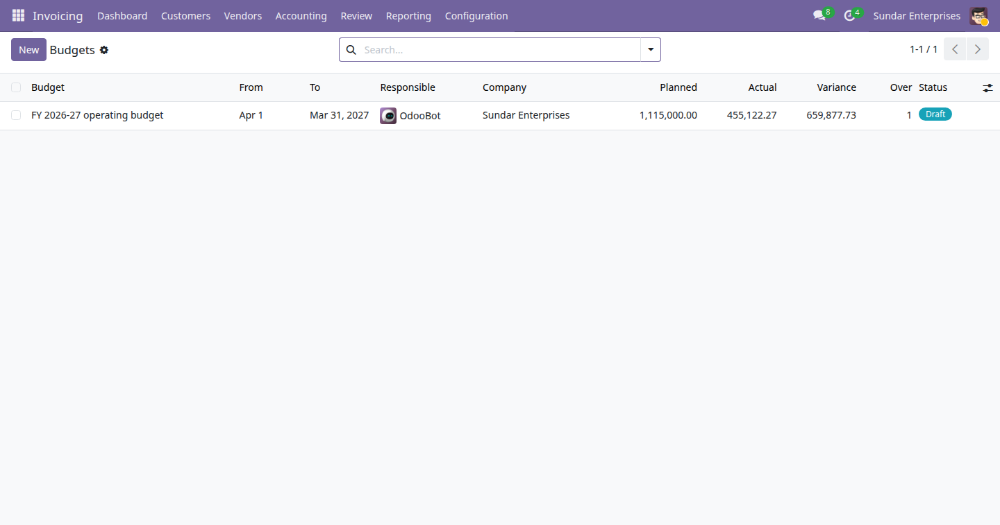

A budget document with a period, a company and a responsible owner. Budget an account or a whole account group, and the actual spend fills in from posted journal items. Variance and percentage are computed with the sign convention a finance person expects, in both directions.

The Budgets list showing a draft budget, FY 2026-27 operating budget, running to 31 March 2027, with planned 1,115,000.00, actual 455,122.27, variance 659,877.73 and one line over budget.
Name, period, company, responsible user and a status of draft, confirmed, done or cancelled. The period locks once the budget is in force, so a circulated variance cannot quietly change meaning.
Budget a single account, or every account inside a group such as all travel accounts, with an optional analytic account. Planned figures are always entered as plain positive amounts.
The sum of posted journal items on the covered accounts, inside the period, in the budget's company. Draft and cancelled entries never count towards a figure.
Odoo stores debits positive and credits negative. Expense lines take the balance as it is, income lines take its negative, so a cost budget and a revenue budget both read as positive amounts.
Positive variance always means good news. A line is flagged over budget when the variance is unfavourable: over-spend on an expense line, under-collection on an income line.
A reporting view grouped by account, filtered by period, status and direction, with a button on every line that opens exactly the journal items behind the figure.
E-Way Bill Expiry Watch (India) · Indian Financial Year Numbering · GST Outward and Inward Summary (India) · Rupee Amounts in Words (Lakh and Crore) · Indian Invoice Print Extras · MSME Vendor Payment Tracking (India) · India Partner Identifier Validation · Indian Payroll Components (PF, ESI, PT) · India TDS Rate and Deduction Register · UPI Payment QR on Invoices (India) · Fixed Asset Register (Lite) · Branches (Lite) · Knowledge Base (Lite) · Label Designer (Lite) · Material Request (Lite) · Password Vault (Lite) · Proforma Invoice · Support Tickets (Lite)
Need the full version? The drkds Accounting Pro app adds budget revisions with approvals, forecasting and multi-company consolidation.
Odoo 19 Community · Licence LGPL-3 · Free and open source
Part of the drkds Indian SME suite for Odoo 19 Community.
Support: jyotinboghani@gmail.com · drkdsinfo.com